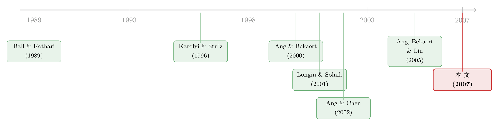

涨时各走各的，跌时一起跳水：给「不对称」一把无关模型的尺子
本文读的是 Hong, Tu & Zhou (2007, Review of Financial Studies)：他们造了一把无需指定任何统计模型的尺子，用来检验股票收益与市场之间的相关性、beta、协方差是否「上行/下行不对称」。结论是——按规模和动量分组的组合，跌的时候比涨的时候更齐心，这种不对称在统计上铁证如山；而账面市值比组合则没有。更妙的是，他们还算出了这件事「值多少钱」：一个具有失望厌恶偏好的投资者，从「相信对称」切换到「相信不对称」，每年能多赚 2% 以上的确定性等价收益。
1 一个让分散投资者后背发凉的现象
先讲一个让人不太舒服的经验事实。
教科书告诉你：不要把鸡蛋放进一个篮子，买一篮子股票就能把风险摊薄。这条建议背后藏着一个默认假设——股票之间的相关性是个常数，涨也好跌也好，它们「抱团」的程度都一样。
可现实似乎并非如此。很多人观察到：市场上涨时，各只股票还能各走各的路；可一旦市场跳水，所有股票仿佛被一根绳子拴住，齐刷刷地往下掉。换句话说，下行时的相关性比上行时更高。如果真是这样，那么分散投资的价值恰恰在你最需要它的时候——崩盘时——蒸发了。这正是 Longin and Solnik (2001) 在国际市场上发现的：各国股市与美国市场的相关性，在市场下跌时显著高于上涨时。
这就引出了本文要讲透的那一个核心问题：我们怎么才能严谨地、可信地断言「不对称」真的存在？
听上去这不该是个难题——直接拿数据算一个「下跌时的条件相关性」和「上涨时的条件相关性」，比一下不就行了？
但这里恰恰埋着一个陷阱。
2 条件相关性的陷阱：为什么不能「直接比」
Stambaugh (1995)、Boyer, Gibson and Loretan (1999) 以及 Forbes and Rigobon (2002) 都指出过同一件事：在某些变量取极端值的条件下计算出来的相关性，本身就是无条件相关性的有偏估计。
直觉是这样的：当你只挑出「两个收益都大于 c 个标准差」的那些样本来算相关性时，你人为地截断了样本的取值范围，这种截断会系统性地扭曲你算出来的相关系数。所以，即便你从真实数据里算出一个远高于无条件相关性的条件相关性，也不足以宣称不对称真的存在——因为那个差异可能纯粹是条件化（conditioning）带来的偏差，外加样本波动。
于是问题升级了：一个合格的统计检验，必须同时校正样本波动和条件化诱导的偏差。
接着，一个自然的问题是：那 Ang and Chen (2002) 不是已经提出过这样的检验了吗？
是的，他们大概是第一个提出正式检验的。但他们的检验回答的是另一个问题。给定一个统计模型，他们的 H 统计量把样本条件相关性与模型隐含的条件相关性做比较：
$$ H = \left[\sum_{i=1}^{m} w(c_i)\big(\rho(c_i,\phi)-\hat\rho(c_i)\big)^2\right]^{1/2} $$
如果 \(H\) 很大，说明这个给定的模型解释不了观测到的不对称。这有用，但它只回答了「这个模型能不能解释不对称」，而没回答「数据到底对不对称」。
这个区别是全文的灵魂。Ang-Chen 问的是「模型对不对」，本文问的是「数据本身对称吗」。后者更根本：一旦数据被判定为不对称，那么任何对称分布（在常规正则条件下）都无法刻画它——你连找模型的资格都没了。
3 真正关键的一步：一把无关模型的尺子
本文的第一个、也是最核心的贡献，就是构造一个无关模型（model-free）的对称性检验。
我们先把对象定义清楚。设 \(\{R_{1t}, R_{2t}\}\) 是两个组合在 \(t\) 期的收益（已标准化为零均值、单位方差）。在 exceedance 水平 \(c\) 上，超越相关性（exceedance correlation）定义为：
$$ \rho^+(c)=\mathrm{corr}(R_{1t},R_{2t}\mid R_{1t}>c,\,R_{2t}>c) $$ $$ \rho^-(c)=\mathrm{corr}(R_{1t},R_{2t}\mid R_{1t}<-c,\,R_{2t}<-c) $$
对称性的零假设干净利落：
$$ H_0:\ \rho^+(c)=\rho^-(c),\quad \text{for all } c\ge 0. $$
也就是说，我们要检验「两个组合正收益之间的相关性」是否等于「它们负收益之间的相关性」。
那怎么把它变成一个可操作的统计量？这里就是真正关键的一步。
直觉上，如果零假设为真，那么把若干个 exceedance 水平 \(c_1,\dots,c_m\) 上的差异排成一个 \(m\times 1\) 向量
$$ \hat\rho^+-\hat\rho^- = \big(\hat\rho^+(c_1)-\hat\rho^-(c_1),\dots,\hat\rho^+(c_m)-\hat\rho^-(c_m)\big)' $$
应该整体接近零。作者在附录中证明：在零假设下，这个向量乘以 \(\sqrt{T}\) 后，对所有满足正则条件的真实分布，都收敛到一个均值为零、方差-协方差矩阵正定的正态分布。于是只要一致地估出这个方差矩阵 \(\hat\Sigma\)，就能构造一个 Wald 型的二次型统计量：
方差矩阵用「核加权」的方式一致估计：
$$ \hat\Sigma=\sum_{l=1-T}^{T-1}k(l/p)\,\hat\gamma_l, $$
其中 \(k(\cdot)\) 取 Bartlett 核 \(k(z)=(1-|z|)\mathbf{1}(|z|<1)\)，正是 Newey and West (1994) 等人惯用的那一个，平滑参数 \(p\) 控制截断阶数（文中取 \(p=3\)）。
这把尺子有三个漂亮之处。第一，它无关模型——你不必先假定数据服从什么分布；第二，它不强加正态性，允许像 GARCH 这样的一般分布，并对金融时序常见的波动率聚集稳健；第三，渐近分布是标准的卡方。
于是，整套统计推断收束到一个极其简洁的结果——
$$ J_\rho \xrightarrow{\ d\ } \chi^2_m . $$
自由度就是 exceedance 水平的个数 \(m\)，P 值一算即得。从计量经济学上看，这其实就是在 Hansen (1982) 的广义矩估计（generalized method of moments, GMM）框架里构造一个 Wald 检验，只不过这里的矩条件是条件矩，因而需要更强的正则条件来保证样本对应物收敛。
4 不止相关性：beta 与协方差的对称性
相关性对冲基金经理很在意，但对资产定价而言，beta 和 协方差同样关键——beta 关乎系统性风险，而协方差才是组合优化里直接的参数输入。
值得强调的是：相关性对称，并不意味着 beta 对称。看条件 beta 的定义就明白了：
$$ \beta^+(c)=\frac{\mathrm{cov}(R_{1t},R_{2t}\mid R_{1t}>c,R_{2t}>c)}{\mathrm{var}(R_{2t}\mid R_{1t}>c,R_{2t}>c)}=\frac{\sigma_1^+(c)}{\sigma_2^+(c)}\,\rho^+(c). $$
beta 是「上行波动率之比」乘以「条件相关性」。即便相关性对称，只要上行/下行的波动率之比 \(\sigma_1/\sigma_2\) 不同，beta 照样可以不对称。所以相关性的检验不能拿来检验 beta。作者于是依葫芦画瓢，用 \(\sqrt{T}(\hat\beta^+-\hat\beta^-)\) 构造了 \(J_\beta\)；对协方差 \(\sigma_{12}^+(c)=\sigma_1^+(c)\sigma_2^+(c)\rho^+(c)\) 构造了 \(J_{\sigma_{12}}\)。两者在零假设下同样收敛到 \(\chi^2_m\)。
三把尺子，一个家族，逻辑一气呵成。
5 数据与那个 44% 的差异
把尺子造好了，该上数据了。
作者用了三组月度数据，样本期都是 1965 年 1 月到 1999 年 12 月，共 420 个观测：
- CRSP 的十个规模（size）十分位组合；
- French 主页上的账面市值比（book-to-market）十分位组合；
- Liu, Warner and Zhang (2005) 提供的动量（momentum）十分位组合。
市场收益取 NYSE/AMEX/NASDAQ 的市值加权指数，所有风险收益都减去无风险利率（一月期国库券）。
结果分两步看。先看符号：规模组合的样本差异 \(\hat\rho^+-\hat\rho^-\) 在全部四个 exceedance 水平上一律为负——这意味着下行相关性确实大于上行相关性。其中 size 2 组合的 \(\hat\rho^-(0)-\hat\rho^+(0)\) 高达惊人的 44%！
但作者立刻泼了盆冷水：差异大不等于真有差异，样本波动随时能造出这种差距。
再看检验：correlation symmetry 检验对最小的四个规模组合在 5% 水平上拒绝了对称（size 1 的 P 值仅 0.34%，size 4 为 1.72%），而对 size 5 及以上则不拒绝。beta 对称在四个 exceedance 水平下同样拒绝 size 1–4；协方差对称拒绝 size 2–4（size 1 在 6.11% 的边缘）。
两个特别有意思的规律浮出水面：
其一，公司越大越对称。 P 值随规模单调上升（size 10 的相关性检验 P 值高达 96.63%）。大公司与市场的上下行同步，是对称的。
其二，检验统计量与偏度（skewness）正相关。 size 1 既有最小的 P 值，又有最大的偏度（0.87）。一个直觉的解释是：小公司在市场下跌时往往跌得比别人更狠，它们更高的正偏度，不过是为更高下行风险所付的报酬。
横向比较三组数据，反转出现了：规模和动量组合有强烈的不对称，账面市值比组合却完全没有。这是个值得玩味的事实——它说明不对称不是所有「异象组合」的通病，而是与某些特定的横截面排序绑定的。
（关于「市场齐不齐心」这件事本身就能预测市场走向，可参见《市场会涨还是会跌？别盯着波动率，去看股票们「有多齐心」》；而把「一起崩」单独拎出来定价的尝试，可参见《因子动物园之外，那种没人定价的「一起崩」》。）
6 它到底值多少钱：从统计显著到经济显著
统计上显著，未必经济上重要，反之亦然。这是全文的第三个贡献：用一个贝叶斯框架给不对称「定价」。
作者为数据设定了一个正态 copula 与 Clayton copula 的混合模型——Clayton copula 的特点恰恰是能捕捉下尾依赖（即一起暴跌的倾向）。他们开发了从贝叶斯后验分布和预测分布中抽样的算法，然后考虑这样一个投资者：他不确定股票收益到底对不对称。沿着 Kandel and Stambaugh (1996) 与 Pástor and Stambaugh (2000) 的思路，问一个干脆的问题——
如果这个投资者从「相信对称」切换到「相信不对称」，他的效用能提高多少？
关键在于偏好的选择。作者采用 Ang, Bekaert and Liu (2005) 的失望厌恶（disappointment aversion, DA）偏好——这种偏好对「低于某个参照点的结果」赋予额外的厌恶权重，因此天然地对下行的「抱团暴跌」格外敏感。当 felicity 函数取幂效用形式、DA 系数在 0.55 到 0.25 之间时，他们算出：切换信念能带来每年超过 2% 的确定性等价（certainty-equivalent）收益。
2% 不是个小数目。它说明：把不对称纳入投资决策，对一个会「怕一起跌」的投资者而言，有实打实的经济价值。
7 文献脉络
把这条线索捋一捋，会发现它走得很有章法。
最早期，人们只是「记录现象」。Ball and Kothari (1989)、Schwert (1989)、Conrad, Gultekin and Kaul (1991) 记录了协方差、波动率、beta 的不对称；Bekaert and Wu (2000) 研究不对称波动；Harvey and Siddique (2000) 转向高阶矩的条件偏度。但这些工作都没有正式的统计检验。
接着，注意力集中到「相关性的不对称」上。Karolyi and Stulz (1996) 问「市场为什么一起动」，Ang and Bekaert (2000) 研究时变相关性下的国际资产配置，Longin and Solnik (2001) 用极值理论刻画国际市场的极端相关，Ang and Chen (2002) 则第一个提出正式检验——但如前所述，那是个有条件于模型的检验。

与此同时，一条「方法论警告」的暗线在提醒大家：Stambaugh (1995)、Boyer, Gibson and Loretan (1999)、Forbes and Rigobon (2002) 反复强调条件相关性的偏差陷阱。
本文（2007）的位置就清楚了：它一手接过「正式检验」的接力棒，把它升级成无关模型的版本，回答了一个更根本的问题；另一手接过 Ang, Bekaert and Liu (2005) 的 DA 偏好和 Kandel-Stambaugh 式的贝叶斯资产配置传统，把「不对称」从统计学命题翻译成了一笔可以计价的经济账。
评论与延伸（Q&A + 研究方向）
(a) 几个可能的疑问
Q：「无关模型」具体是什么意思？它真的什么假设都不用吗？
不是。「无关模型」指的是不需要为数据指定一个参数化的统计模型（如某个特定的 GARCH 或 copula）就能做检验。但它仍然依赖一组正则条件（如方差矩阵有限且非奇异、混合性条件等）来保证条件样本矩收敛到合适的渐近极限。它的卖点是：一旦拒绝对称，结论对所有满足这些常规条件的对称分布都成立，而不只针对某一个模型。
Q：它和 Ang-Chen (2002) 检验到底差在哪？
差在问的问题。Ang-Chen 比较的是「样本条件相关性」与「模型隐含的条件相关性」，回答「这个给定模型能否解释观测到的不对称」；本文比较的是「上行」与「下行」的样本量本身，回答「数据是否对称」。此外，本文在附录里给出的渐近分布还顺手修好了 Ang-Chen 检验基于正态近似时过度拒绝的毛病。
Q：那个 size 2 组合 44% 的差异，是不是就铁证不对称了？
恰恰相反，这正是全文最想纠正的直觉。44% 是样本条件相关性之差，条件化本身会诱导偏差，加上样本波动，单看这个数字不能下结论。要等到 \(J_\rho\) 检验（在校正了这两者之后）仍然拒绝对称，才能合法地宣称 size 2 与市场的相关性是不对称的——而它确实拒绝了。
Q：为什么账面市值比组合没有不对称，规模和动量却有？这正常吗？
论文报告了这个事实但没给深层机制。一个可能的解读是：规模和动量组合在下行时的「抱团」与小公司更高的下行风险、动量的崩溃风险有关，而账面市值比的排序与「一起跌」的尾部依赖关系较弱。这本身就是个值得追问的开放问题。
Q：为什么大公司反而对称？
文中给的直觉是：小公司在市场下跌时往往跌得更猛，呈现更强的下尾依赖与更高的正偏度，而这种偏度是对其更高下行风险的补偿。大公司则上下行同步性接近，因而对称。检验统计量与偏度的正相关也印证了这一点。
Q：2% 的确定性等价收益，对所有投资者都成立吗？
不。这个数字是在失望厌恶偏好、幂效用 felicity 函数、DA 系数 0.55–0.25 这组特定设定下算出的。DA 偏好对下行结果赋予额外厌恶，所以对「一起暴跌」尤其敏感；换成普通的幂效用（对称地对待上下行），不对称的经济价值会小很多。这一点诚实地限定了结论的适用范围。
(b) 几个可能的研究问题与提案
1. 把这把尺子搬到公司债市场
【经济故事】公司债与权益、与利率因子之间的相关性，很可能也是「平时各走各的、危机时一起崩」。2020 年 3 月的公司债流动性危机就是活生生的例子。如果信用利差与市场的下行相关性显著高于上行，那么所谓「信用对冲」在最需要时会失效，对资产配置和风险管理意义重大。
【可行性】高。直接把 \(J_\rho\)、\(J_\beta\)、\(J_{\sigma_{12}}\) 三个检验套用到 TRACE 公司债组合收益与市场/利率因子上即可，方法是现成的、无关模型的。数据可得，识别不依赖额外假设。（与《一把更稳的尺子，量出了危机里公司债的「流动性恐慌」》的问题域天然衔接。）
2. 外资持有人是否放大了下行的不对称相关
【经济故事】跨境资本在风险事件中倾向于同时撤离（flight-to-safety），这可能让有大量外资持有的资产，与全球市场之间的下行相关性被系统性抬高。如果能证实外资份额越高、相关性不对称越强，就为「外资是不是放大了尾部联动」提供了一个干净的度量。
【可行性】中。需要把按外资持股比例排序的组合收益接入本文的检验框架；外资持股数据（如 FactSet/13F 的跨境部分、或某些国家的登记数据）可得，但因果识别需要外生冲击（如指数纳入带来的可投资度变化）来佐证。
3. 不对称是时变的吗？把检验做成滚动窗口
【经济故事】本文给的是整段样本的一个静态判断。但常识是，「一起跌」的倾向在牛市平静期和危机临近时应该不同。把 \(J_\rho\) 做成滚动窗口或与状态变量交互，可以刻画不对称的时变性，进而问：不对称的强度本身能否预测未来的崩盘？
【可行性】中。滚动窗口会牺牲每个窗口的样本量（本文 420 个月已不算多），小样本性质需重新校准；但方法本身可直接扩展。可与条件 beta 的时变性研究对话（参见《时变的 beta，被低估了二十年的风险》）。
4. 用更细的 copula 族给不对称定价
【经济故事】本文只用了正态 + Clayton 的两成分混合。下尾依赖的形状其实很丰富，不同 copula（如 Gumbel、t-copula、旋转 copula）刻画的尾部联动差别很大，可能改变那 2% 的经济价值估计。
【可行性】高。贝叶斯抽样框架已搭好，扩展 copula 族属于工程量问题；难点在于模型选择与过拟合的权衡，需要谨慎的样本外验证。
参考文献
- Ang, A., and G. Bekaert (2000). International Asset Allocation with Time-varying Correlations. Review of Financial Studies 15, 1137–1187.
- Ang, A., and J. Chen (2002). Asymmetric Correlations of Equity Portfolios. Journal of Financial Economics 63, 443–494.
- Ang, A., G. Bekaert, and J. Liu (2005). Why Stocks May Disappoint. Journal of Financial Economics 76, 471–508.
- Ball, R., and S. P. Kothari (1989). Nonstationary Expected Returns: Implications for Tests of Market Efficiency and Serial Correlation in Returns. Journal of Financial Economics 25, 51–74.
- Bekaert, G., and G. Wu (2000). Asymmetric Volatility and Risk in Equity Markets. Review of Financial Studies 13, 1–42.
- Boyer, B. H., M. S. Gibson, and M. Loretan (1999). Pitfalls in Tests for Changes in Correlations. International Finance Discussion Paper 597, Board of Governors of the Federal Reserve System.
- Forbes, K., and R. Rigobon (2002). No Contagion, Only Interdependence: Measuring Stock Market Co-movements. Journal of Finance 57, 2223–2261.
- Hansen, L. P. (1982). Large Sample Properties of the Generalized Method of Moments Estimators. Econometrica 50, 1029–1054.
- Harvey, C. R., and A. Siddique (2000). Conditional Skewness in Asset Pricing Tests. Journal of Finance 55, 1263–1295.
- Hong, Y., J. Tu, and G. Zhou (2007). Asymmetries in Stock Returns: Statistical Tests and Economic Evaluation. Review of Financial Studies 20(5), 1547–1581.
- Kandel, S., and R. F. Stambaugh (1996). On the Predictability of Stock Returns: An Asset-allocation Perspective. Journal of Finance 51, 385–424.
- Karolyi, A., and R. Stulz (1996). Why Do Markets Move Together? An Investigation of US-Japan Stock Return Comovements. Journal of Finance 51, 951–986.
- Longin, F., and B. Solnik (2001). Extreme Correlation of International Equity Markets. Journal of Finance 56, 649–676.
- Newey, W., and K. West (1994). Automatic Lag Selection in Covariance Matrix Estimation. Review of Economic Studies 61, 631–653.
- Pástor, L., and R. F. Stambaugh (2000). Comparing Asset Pricing Models: An Investment Perspective. Journal of Financial Economics 56, 335–381.
- Schwert, G. W. (1989). Why Does Stock Market Volatility Change over Time? Journal of Finance 44, 1115–1153.